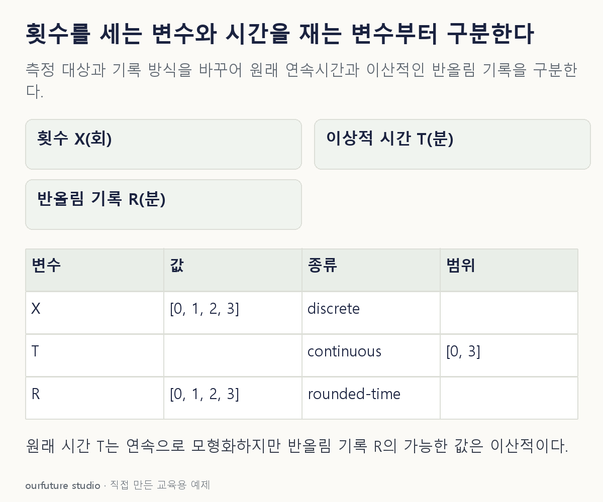

조건을 바꾸며 확인하기
시간 T와 반올림 기록 R은 다른 변수다. 연속시간이라는 이유만으로 지수분포를 가정하지 않는다.
설명 그림과 비교하기
아래 그림과 표는 고정된 설명 예제입니다. 기본·변형 중 어떤 조건인지 캡션을 읽고, 바꾼 입력의 결과는 계산 칸에서 확인하세요.

같은 문제를 직접 골라 보기
X는 하루 고장 건수, T는 이상적인 연속시간으로 정의한 다음 고장까지의 시간이다.
조건을 더 바꾸면?
T를 가장 가까운 분으로 반올림해 저장했다. 파일에 정수만 있다는 이유로 고장 건수와 같은 변수라고 할 수 있을까?
변형 풀이 확인
그럴 수 없다.
시간을 양자화한 기록과 사건의 횟수는 측정 대상이 다르다. 원래 정의와 기록 해상도를 함께 써야 한다.
정수로 보이는가보다 무엇을 세거나 재었는가를 먼저 본다.